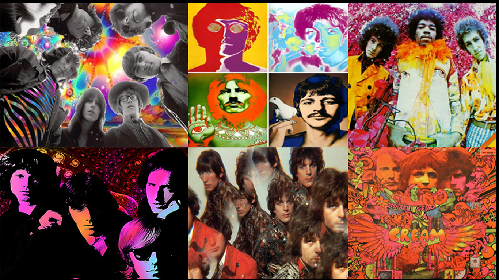

ROCK PSICODÉLICO
El Rock Psicodélico o sicodelico fue un género musical de la segunda mitad de los años 60. Los artistas buscaban recrear y alimentar las sensaciones que les producían las drogas alucinógenas como la marihuana y el LSD.
Para ello utilizaba nuevas técnicas de sonido e incluían instrumentos de la cultura hindú. Pretendían potenciar e inducir los mismos estados alterados de consciencia que les provocaban las drogas psicotrópicas a través de la música. Al tomar como base la música rock, mucha de la experimentación en los sonidos se hizo a través de pedales de guitarra como el característico Wah Wah de Jimy Hendrix.
Algunos de los músicos de rock psicodélico de principios de la década de 1960 se basaron en el folk, el jazz y el blues, mientras que otros mostraron una influencia clásica india explícita llamada "raga rock”.
Los instrumentos más comunes para este tipo de música son la guitarra eléctrica, bajo, batería. Entre sus representantes más destacados se encuentran 13th floor elevators, Jefferson Airplane, Psychedelic porn crumpest, Tame Impala, grateful dead.
